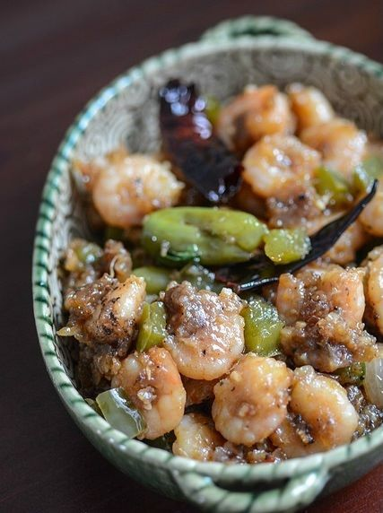
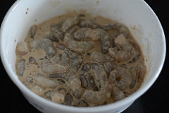
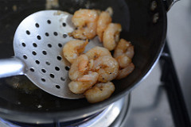
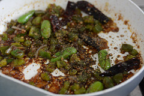
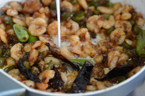
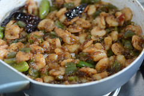

Dry Chilli Prawns

- 🍽️Servings: 4
- 🍝Total time: 40 min
- ⏱️Prep time: 15 min
- 🧑🏼🍳Cook time: 25 min
Ingredients
250 grams of prawns, shelled and cleaned
1 cup of green capsicum or bell pepper, cut into small cubes
2-3 dry red chillies
1 tsp of minced garlic
1 tsp of grated ginger
1/2 cup of onions, cut into small cubes
2 tsp of soya sauce
1 tsp of red or green chilli sauce
1-2 tsp of black pepper powder
1 tsp of corn flour or corn starch
1 tbsp of corn flour
4-5 tbsp of plain flour
1/2 tsp of black pepper
1/2 tsp of minced garlic
1/4 tsp of red chilli powder (optional)
4 cups of oil, for frying (or as required)
2 green chillies, slit
Directions
To make the batter:
- Mix together the corn flour, flour, some salt, garlic, black pepper and chilli powder (if using) with some water to make a thick batter
- Add the prawns to this and combine with your fingers until they are well-coated with the batter

Frying the prawns:
- Heat oil for deep frying until smoking point and gently add a few prawns at a time
- Fry until light golden brown, drain, and set aside

- Repeat with the remaining prawns until all done
Putting everything together:
- In a wide pan, heat 2 tbsp oil and add the onions, green chillies, capsicum, and red chillies torn into pieces
- Saute until onions are soft
- Then add ginger and garlic. Saute again for a minute or two
- On medium heat, saute until fragrant and the onions turn transparent and soft
- Add the soya sauce and chilli sauce (I used Sriracha)
- Mix well on high heat for a minute

- Now add the pepper powder and saute for 5 seconds
- Top up with the fried prawns and lower heat. Mix well and continue to let it cook and let the flavours mingle
- Meanwhile, mix 1 tsp cornflour with about 1/4 cup water and pour into the above mixture

- Mix well and turn the heat off. The gravy will thicken further upon cooling
- If you want more gravy, add more water to the cornflour mixture and don’t heat for too long
- Garnish with chopped spring onions if you’d like. Adding a small sprinkle of sugar at this stage is not a bad idea either, especially since we are adding a lot of spice to the chilli prawns
